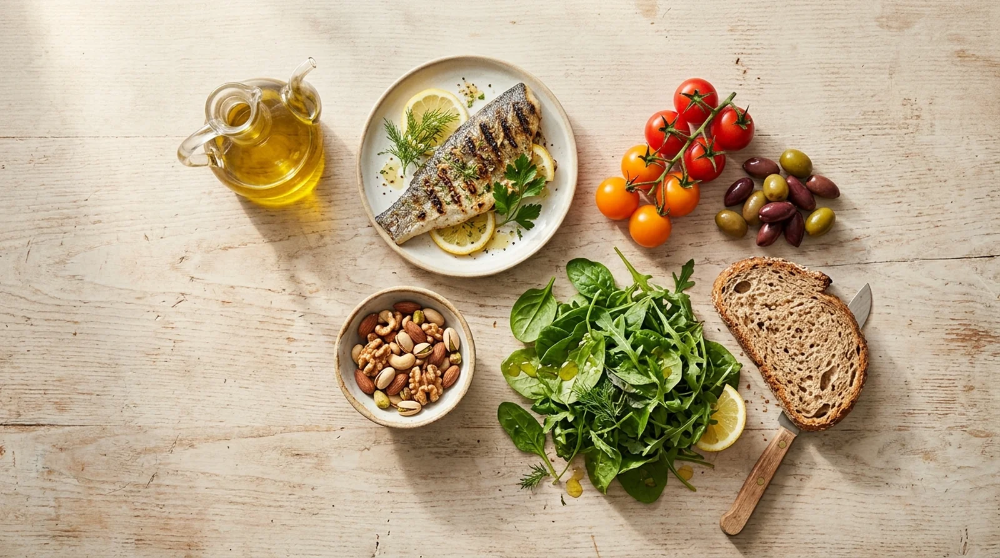

Cardiólogo en Elche · Clínica Elche Salud
Qué es realmente, qué evidencia científica la respalda y por qué las guías la recomiendan por encima de cualquier otro patrón

Hablar de "dieta" suele evocar restricción. Por eso es más exacto hablar de patrón de alimentación: el conjunto de hábitos con los que comemos, no solo qué comemos. La dieta mediterránea es el patrón de alimentación propio de los países del área mediterránea donde crecen los olivos —Grecia, sur de Italia y España— a principios de los años sesenta. Es, con diferencia, el patrón más estudiado y mejor respaldado científicamente en prevención cardiovascular.
La dieta mediterránea es el patrón de alimentación con mayor respaldo científico en prevención cardiovascular. En el ensayo PREDIMED, seguirla redujo alrededor de un 30% la incidencia de infarto, ictus y muerte cardiovascular frente a una dieta baja en grasas.
Tanto la Sociedad Europea de Cardiología como las sociedades americanas de cardiología la recomiendan de forma explícita, por encima de cualquier otro patrón alimentario.
Más que una lista de alimentos prohibidos, es un patrón basado en lo que se come con frecuencia y en cómo se vive alrededor de la comida:
La grasa principal de la dieta, preferiblemente virgen extra. Es el componente más característico y el más estudiado del patrón.
Pescado con frecuencia, especialmente azul, y legumbres como fuente habitual de proteína, por delante de la carne roja.
Frescas, de temporada, en cada comida. La fruta como postre habitual, no los dulces.
Pan, pasta y arroz preferiblemente integrales; un puñado de frutos secos al día como snack habitual.
No están excluidos, pero ocupan un lugar secundario, no protagonista, en el patrón.
Actividad física diaria, buenas relaciones sociales, descanso adecuado y control del estrés forman parte del mismo patrón.
No es una recomendación basada en tradición o intuición. Son varias décadas de estudios, cada vez con mejor diseño, los que sostienen sus beneficios:
El primero en comparar la dieta y la mortalidad cardiovascular entre distintos países. Japón y el área mediterránea resultaron las regiones con menor mortalidad atribuible a la alimentación.
En pacientes que ya habían sufrido un infarto, el grupo con dieta mediterránea tuvo tan pocos eventos frente al grupo control que el estudio se detuvo antes de lo previsto por motivos éticos.
Comparó una dieta baja en grasas con dieta mediterránea suplementada con aceite de oliva o con frutos secos. Ambos grupos de dieta mediterránea tuvieron menos ictus, infartos y muertes de cualquier causa.
Confirmó el beneficio también en prevención secundaria: menos infartos, ictus y muertes cardiovasculares con dieta mediterránea que con dieta baja en grasas, a largo plazo.
Cuando las guías de prevención cardiovascular tienen que dar una recomendación dietética concreta, la dieta mediterránea aparece de forma sistemática. La guía europea de 2021 recomienda adoptarla para reducir el riesgo cardiovascular, y la guía americana de 2019 la sitúa como primera recomendación dietética, por delante incluso de reducir la sal o las grasas saturadas.
El vino forma parte del patrón tradicional, pero eso no equivale a una recomendación de consumo. La evidencia reciente cuestiona que exista un umbral de alcohol verdaderamente seguro para la salud, y el posible beneficio cardiovascular del consumo ligero sigue siendo objeto de debate científico. La postura correcta es clara: no se debe empezar a beber alcohol por sus supuestos beneficios cardiovasculares. Si ya se consume, la moderación —y nunca a diario en cantidades relevantes— es lo que marca la diferencia dentro del patrón.
En la valoración de riesgo cardiovascular, la orientación nutricional forma parte del abordaje: revisar tu patrón de alimentación actual, identificar qué cambios tendrían más impacto en tu caso —por ejemplo, si tienes el colesterol elevado— y resolver dudas concretas sobre cómo aplicarlos, siempre integrado con el resto de factores de riesgo.
Divulgación diaria sobre alimentación y salud del corazón.
Orientación nutricional integrada en la valoración de riesgo cardiovascular. Consulta en Elche.
Estrategias nutricionales para el control de la tensión arterial.
Leer artículo → Motivo de consultaCómo interpretar tu analítica de lípidos y cuándo requiere tratamiento.
Ver más → ServicioCálculo SCORE2, factores de riesgo y plan de optimización personalizado.
Ver detalles →